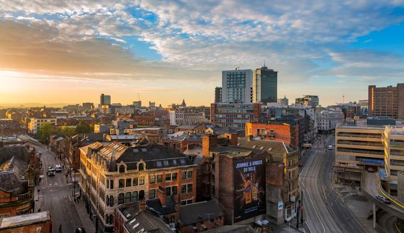

MANCHESTER
1.맨체스터 소개
맨체스터는 영국의 도시이다. 리버풀에서 북동쪽으로 약 50km 정도 떨어져 있으며,
머지강의 지류인 어웰강과 아크강의 합류점에 위치해 있다. 오늘날에는 시내의 공장이 점차 외각지대로 이전하고
주변에 인구 20~30만에 이르는 9개의 공업도시가 새로생겨 그레이터맨체스터주를 형성하고 있다.
런던,버밍엄과 함꼐 런던의 3대 도시라 불리고 있다. 근래에는 제 2의 도시라 불리기도 할 정도로 성장하고 있다.
2.관광 명소
- 올드 트래포드
- 맨체스터 도시의 유서 깊은 축구팀 맨체스터유나이티드드의 홈 구장이다.
- 맨체스터 성당
- 13세기 기원의 CofE 건물로 랭커스터 공작 연대의 예배당이 있습니다.
- 맨체스터 미술관
- 맨체스터 미술관는 영국 맨체스터 중앙에 위치한 국립 미술관이다.
3.맨체스터의 날씨
- 맨체스터의 봄(3월~5월)
-3월과 4월에는 날씨가 쌀쌀하며 특히 4월에는 비가 많이 내립니다.5월부터는 따뜻해지기 시작합니다.
- 맨체스터의 여름(6월~8월)
-반바지를 입을 만큼 덥지는 않으며 좋은 날씨가 지속됩니다. 그러나 부슬비가 자주 내리기에 우산을 준비하셔야 합니다.
- 맨체스터의 가을(9월~11월)
-9월부터는 기온이 떨어지기 시작하고 10월부터 쌀쌀해집니다. 특히 10월은 비가 가장 많이 오는 달이기에 주의하셔야 합니다.
- 맨체스터의 겨울(12월~2월)
-겨울에는 오후 4시30분이면 해가 지고 깜깜해집니다. 기온은 항상 낮은 것은 아니지만 방한용품을 준비하는 것이 좋습니다.